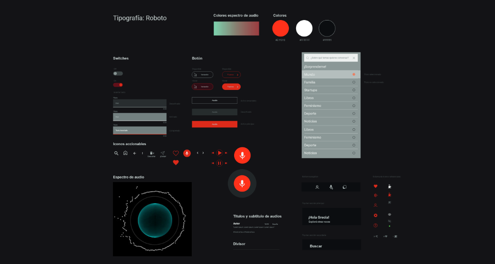
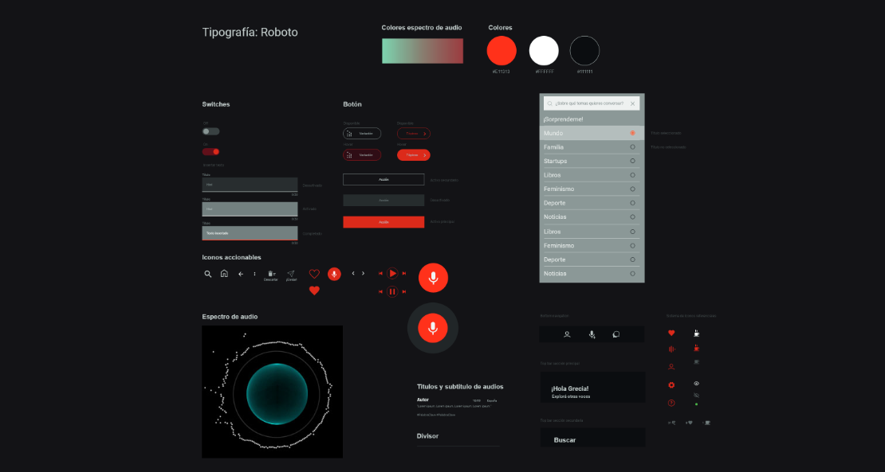

Good Talk voice app experience 📣
This case study will walk you through the thought process and decision making while creating GoodTalk voice app, from concept to prototype. The project reflects on how tradictional social apps shape the way we interact with strangers, proposing an app with the user's voice at the center of the experience.
- Tools: Adobe XD / Adobe Aftereffects / Whimsical / Illustrator
- Project Coderhouse individual course project
- Role: UX / UI / Illustrations / Prototype
- Timeframe: 4 months
- Possitive review keywords: Personal / affinity / variety of topics / intimate / discover / control
- Negative review keywords: Lack of control / noisy feed / saving limitation / lack of personalization.
- Twitter: Creates Spaces, guaranteeing tolerance and openness in sharing ideas.
- Clubhouse: We access Rooms, which describes quite well the more exclusive conversation groups it generates.
- Swell: Accurately goes with Talking, pointing at the sole purpose the app has: to cover people’s need to simply talk to each other.
- Stereo: We make Shows, one-sided interactions resembling a podcast format.
- A clear tendency appeared towards grouping three main categories: interaction, actions, and profiles.
- The term "record" was frequently used to group action cards, so this term was chosen for audio generation buttons.
- Participants tended to use terminology we would find in a traditional phone agenda. Even though this could have been conditioned by the given card names, it was an interesting approach for the profile section as well as the handling of conversations and audios.

Conversation stops
The pandemic made us value proximity with others as we found ourselves suddenly isolated from our community. Quarantine days brought E.M. Forster’s dystopian short story The Machine Stops to mind, with its detached characters in underground cells who forgot why interaction with others and the outside world had any sense at all to connect. Although we didn’t pass this threshold with technology, the pandemic did raise awareness on the importance of in-person interactions and what digital interactions leave behind. Voice apps are gaining more presence over traditional social platforms.
Swiping vs listening
Unexpectedly starting a good conversation with a stranger in a queue triggered by a casual remark is what inspired one of Good Talk's objectives; to recover spontanaety in interactions. Based on random or theme filtered voice message interchanges, the following main goals were set from the start:
1. Propose an alternative social media experience that allows for more meaningful and natural interactions.
2. Make the user’s voice their perceived identity as opposed to traditional user profiles.
Active and reactive personas
Following the introvert/extrovert types, I narrowed down the user personas to two hypothetical profiles in terms of how they would interact with the application: an active user type tends to generate content, and a reactive user type tends to explore and respond to content.

What do users say? - Desktop research
Researching reviews on existing voice apps gave me insights on what people value and look for when choosing to use a voice app over traditional social apps. I highlighted some key words that captured useful concepts in positive and negative reviews (see list below). Positive reviews showed that users value the feeling, comfort, and excitement of more authentic experiences closer to real-life encounters. Opposed to this, negative comments pointed at how the content was managed, privacy, and customization, guiding me on some priorities to set when defining the app’s functions in the profile and search sections. These concerns were useful to later plan what subjects to dig into when conducting one-on-one interviews with potential users.
Filtering as a habit
It was clear after analyzing different user reviews that a social app, especially one that relies on our voice and what we have to say, should not only be engaging but also ensure an efficient matching system of users’ interests through filters that adapt to diverse profiles. I found that both control and spontaneity, even though contradictory, are important when it comes to exploring content, in order to make the experience engaging enough.
Benchmark - Defining the interaction experience
When researching competitor apps, I focused on how they used different approaches and concepts to interaction through audio. While some chose to relate the app to identifiable experiences, others chose to focus on the interaction space or the status of the user-speaker. The words each competitor chose say a lot about these decisions: This analysis helped me understand how I wanted to define GoodTalk’s core concept and star element of the conversation experience that would distinguish it from competitor proposals: Voice.

The spectrum of our voice
Voice can transmit so much sensitive information about a person through its pitch, intonation, tone, and volume. Traditional filters are accompanied in Good Talk by voice quality filters. As audible voices are a reference to other users voices, it was decided from the start that sound data would generate graphic elements to visually browse voices on the screen. The action of swiping configured profiles to filter users, which we’re so used to, is replaced here by dynamic motion graphics orchestrated by the user’s voice. Knowing that this would add a challenge in terms of UI made me start researching interface solutions in other fields with a similar approach. A first spectrum was designed for this prototype, composed of graphic elements sensitive to a set of parameters that can be filtered: color, amplitude, and size respond to pitch, intonation, and volume.Interviews
Based on the two personas I created, I conducted two interviews with a set of questions pointing at social matters and preferences, as well as general thoughts on social media and personal experience with social apps. The resulting empathy map resembled some concerns seen in competitor apps’ user reviews. Authenticity and fluid interactions were valued as opposed to artificial interactions or a lack of trust. Both interviewees tackled the emotional side of connecting on social apps and criticized the lack of fluid dialog.


Cardsorting
Once I had a minimum viable product defined, I conducted a card sorting test with 10 participants. The following insights helped later on build the information architecture tree:
Information architecture
The app's content was outlined, grouping the main sections (profile and conversations in progress) and main actions (search and record). The initial structure was later modified after the first usability tests: the section "My publications" was searched for by participants inside "My profile," so it was included here. The two main journeys to make the MVP possible were outlined to start sketching wireframes for testing. These defined the main user flows: search content and record content.
Usability tests
After testing in XD using the first wireframes with 5 users, observations on how they accomplished each action in the main user flow helped understand how the elements were instinctively interpreted and which needed to be redefined. Detecting pain pointsThe following chart summarizes the main observations during usability tests, the conclusions and changes applied to the initial low fidelity frames:

The following frames show the main screen's evolution from initial sketches to high fidelity proposal. Changes applied respond to observations on users duing tests:


 

Learnings
As a former industrial designer, I found conducting a UX project surprisingly rewarding, as it filled a gap in my previous design process habits. Working in conversation design after this project helped reinforce and apply many of the insights gained. Here are a few conclusions I reached during the research process:
Assumptions have multiple layers:
Beyond the actual app functionality, I came across some earlier misassumptions on my side, one of which was the interpretation given to the actual card-sorting test cards. Depending on how big the gap is between the participants’ and my own interpretations, it might be necessary to reframe and redo tests. Going back to the market analysis and competitors’ word choices, it would be interesting to plan a testing stage specifically for action definitions to avoid defining terminology too early on. After all, these terms pretty much helped shape the overall content's structure, tone, and concept.
Test strategically
Usability tests were the key source of data needed to make good decisions. I did realize, though, how important it is to ask the right questions in the right format. Planning What to test, when to test it, and how to test it can provide more useful results. In this case, a focus group session could give further information on users' needs and motivations. Also, an earlier test phase on interaction concepts and choice of words could enrich the creative process of defining the app experience.
Iterate with a clear set of goals:
After the first usability test, the main pain points were detected; focusing efforts on these elements without advancing to secondary ones was a time-saving habit.
The source of friction is not always were expected:
Accurately detecting what generates blockages to find the actual cause of the problem. This is something I continue to see now in conversation design, while analyzing user-chatbot interactions. Sometimes a smart change is a small one and not exactly where we expect it to be. In-person observation during testing was very helpful to get the needed feedback for UI improvement.
What would I do differently?
After finishing this first prototype, I found there are more subtleties to what would actually motivate a user to explore and reply to an audio voice. In order to better understand potential user behaviors and psychological aspects of their motivations and deterrents, I would conduct a focus group as well as one-on-one interviews. User reviews on competitor apps point out interesting subjects that can be further analyzed, and these happen to directly relate to specific app functions that can be renovated, such as the filter section, the feed, the way the content is manipulated, and interaction rules.Thank you for reading!
Watch prototype 👇